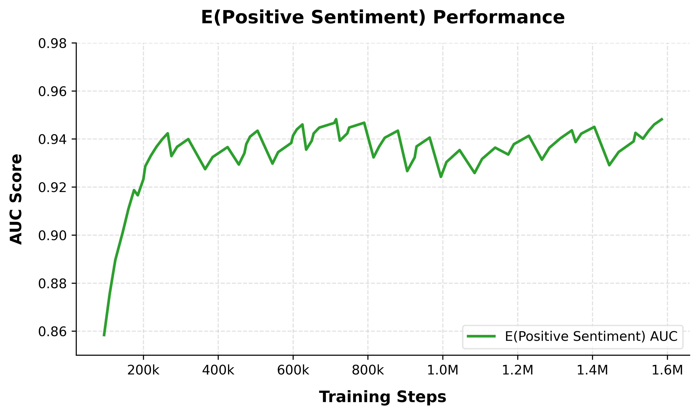
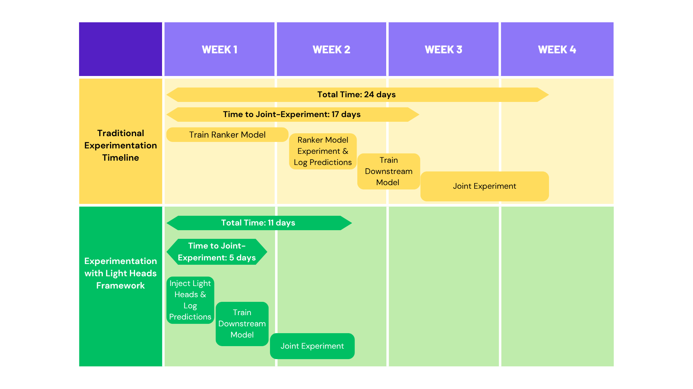

Contents · 8 sections
1Why does adding a new target take weeks?2How Light Heads are attached3Why cut the gradient, and why reset every run?4How far behind a fully trained head is it?5How much time it saved, and what it brought6Limitations as I see them7How a recommendation team could try it8VerdictSHARE
This YouTube engineering paper proposes the Light Head framework: when a multi-task ranking model needs a new prediction target, the target stays out of the main model and becomes a small prediction head on top of the shared layers (the paper calls it a Light Head). That way there is no need to cold-start the large model, and no need to wait for dozens of experiment models to add the new prediction one by one. The small head only reads the shared layers' output and does not change the shared layers during training; it is learned from scratch in every training run; and it is defined in a central configuration outside the model code that all ranking models share, so every model outputs the new prediction. The downstream model that turns these predictions into the final ranking score therefore gets consistent inputs quickly. With the framework, a full experiment cycle covering the ranker and a downstream model shrank from 24 days to 11. The cost is an AUC about 0.01 lower than a fully trained head on data-rich tasks such as clicks. Recommendation teams that already have a continuous-training pipeline can borrow the design directly.
Why does adding a new target take weeks?
First, what a "downstream model" is. YouTube's ranking model outputs a set of predictions for each video, such as click probability, interaction rate and positive-feedback probability. A later model (the paper's examples are a learned reward model or a score-combination layer) takes these predictions as input and computes the final ranking score. Both training and serving require the downstream model's input predictions to be consistent. Traditionally, only the few experimental models carrying a new task output the new prediction, so the downstream model waits until those experiments log enough data. At serving time the dozens of other experimental models lack that prediction, so its inputs come and go.
Suppose a team wants to add a new target, "will the user come back after watching" (illustrative). The traditional route has four steps:
| Step (illustrative) | What happens | Why it is slow |
|---|---|---|
| 1 | Add the head to the ranker and train from scratch | Cold-starting a large model takes one to several weeks |
| 2 | Put the new model in an A/B test and log the new prediction | Dozens of experiments split traffic, so each gets few samples |
| 3 | Train the downstream model on those logs | It has to wait until enough data accumulates |
| 4 | Run a joint experiment with both models | It can only start after the first three steps |
The top half of Figure 4 shows this timeline: 24 days in total. Once the experiment proves the head useful, a longer wait follows. Dozens of experimental models run in production at the same time, and all of them must add the new head before the downstream model can use it on all traffic; the paper says this takes two to three months.
Besides time there is a risk. The new target shares the lower layers with the old ones. If the two point in different directions, the new target's gradient pulls the shared layers elsewhere and the old targets get worse.
How Light Heads are attached

The framework has only two parts: a central config kept separate from any model's code, and a small piece of code in each model that reads the config and inserts the heads into the compute graph. The config specifies the head's label, loss, activation, whether it is classification or regression, which metrics to monitor, and optionally functions for sampling or reweighting examples. A new target's label can be a field already in the logs, or a separate data-generation job can compute a new label and join it with the existing training data. Models read the config during continuous training and insert the new head at the same layer as the existing heads, while the shared layers below keep training on the existing targets but get no updates from the new head.
The data flow, in order:
- A researcher writes a new head into the central config.
- At the start of its next training run, each ranking model reads the config and connects this shallow network (a few hidden layers) to the output of the shared layers.
- During training, the new head updates only its own layers; the shared layers receive none of its gradient.
- The model is exported for serving only after the run finishes. Every deployed model then starts outputting and logging the new prediction, so data accumulates from many models at once and enough downstream training data builds up much faster than from a single new model; older models without the head return a default value.
The next sections explain why each design choice is there.
Why cut the gradient, and why reset every run?
The stop-gradient addresses conflicts between new and old targets. Because the new head's gradient never reaches the shared layers, it cannot touch the old targets. The paper compares this to LoRA and adapters, where a frozen backbone carries small trained modules. The difference is that here the backbone is not frozen: the old targets keep training the shared layers as usual, and only the new head has no influence on them. Hoot says

- Reading the arrows: shared layers to the head is the forward representation, so the head improves as the shared layers improve; the backward gradient stops at the head.
Light Heads' contribution is attaching new prediction heads to an existing model cheaply without hurting old targets. Two separate things: with stop-gradient the new head's gradient never reaches the shared layers, but old targets keep training them, so the backbone keeps improving and the head benefits; restarting the head at random every run makes the same head equally trained, and equally good, in new and old models. The head is shallow and its gradient stays local, so it is back to its earlier level within a few steps.
Source
paper §3 design and Figure 3The reset addresses something else: the same head has to behave the same way in every model. Production runs both new models and models that have been training for a long time. If the head kept its parameters, it would be trained longer in older models and less in newer ones, the same prediction would differ in quality across models, and the downstream model could not safely mix them. Light Heads keep no checkpoint for the head; each run starts it from random initialization.
The reset works only because two conditions hold together: the head is shallow and its gradient does not travel down, so it converges within one run. In this system a training run is a scheduled job over the latest window of logs. Within the first few steps of a run the head is back at its earlier level, and the remaining steps keep training an already converged head. Figure 3 shows this curve.

Why is serving quality unaffected? Because a model is exported only after the whole run completes, by which point the head has long converged. The flip side is that the head relies heavily on what the shared layers have learned: when the shared layers improve, so does the head.
How far behind a fully trained head is it?
The experiments use YouTube's Home and Watch Next ranking models. A full head trains with the model from step 0 and passes its gradient down; a Light Head joins at step 1.2 million, with stop-gradient and a reset every run.
| Target | Full head | Light Head |
|---|---|---|
| Click-through P(CTR), AUC | 0.781 | 0.772 |
| Positive feedback E(Positive Sentiment), AUC | 0.9557 | 0.9553 |
| Interaction rate E(Interaction Rate), AUC | 0.9794 | 0.9704 |
| Engagement E(Engagement), RMSE | 0.9673 | 0.9675 |
The gaps sit on data-rich tasks. For clicks, the full head can also steer the shared layers toward what it needs, while the Light Head must use the existing representation, so its AUC is about 0.01 lower. For a sparse task such as positive feedback the two are almost identical, because the shared layers already learned a general enough representation for the other targets. The paper also tested two new targets with no full-head counterpart: "intent to revisit" reaches an AUC of 0.8523 and "intent to share" 0.9224, suggesting the shared layers are good enough for new targets similar in nature to existing ones; the paper notes these tasks resemble existing ones, and there is no full head to compare against.
Is the stop-gradient really needed? Without it, the main model's existing heads got worse: click AUC fell from 0.7767 to 0.7704, which means the new head's gradient really does hurt old targets. The Light Head itself also got worse, its click AUC dropping from 0.7667 to 0.7584. Once the new target pulls the shared layers off course, heads built on them get worse too, as happened to the measured main-model heads and some Light Heads, which is the task conflict the paper warns about.
Does the reset cost anything? A little. Click AUC is 0.764 with the reset and 0.7646 without; positive feedback goes from 0.9508 to 0.952, a larger gain for the sparser task. So the framework lets very sparse heads skip the reset and keep training their parameters.
How much time it saved, and what it brought

The time is saved in two places. The ranker needs no cold start: once injected into a continuously trained model, a new head can serve in as little as a day. And because every model and every experiment outputs the new prediction, the downstream model suddenly has far more training data instead of waiting for one experiment's thin slice of traffic. Launch works the same way: the two to three months spent adding a head everywhere can shrink to a few days.
Two launches: a head optimizing long-horizon reward raised top-line engagement by 0.03% (p<0.05) and cut low-quality impressions by 0.40%; a head tailored to subscribers of paid Primetime channels raised their primetime-specific engagement by 13.83%. The Primetime case matches another use the paper describes (§3.2): the main model trains on all traffic, and upweighting a niche slice there would hurt the overall metrics, whereas a Light Head can train on that slice alone without touching the shared layers.
To make this global injection safe in production, the paper adds three safeguards. The config is read once at the start of each run, so mid-run edits wait for the next run. Every head, including new ones, is evaluated automatically before a model is exported. And if a model has not yet picked up the new config, downstream models receive a preset default value.
Limitations as I see them
First, the cost lands on the most important task. Clicks are among the heaviest targets in ranking, and the Light Head's AUC there is 0.009 below the full head. The paper trades this accuracy for time and says successful Light Heads usually stay in production rather than being upgraded to full heads. For a main target that is very sensitive to accuracy, that trade may not fit.
Second, it depends on continuous training. The head starts from random parameters every time and must converge within the same run before export, so it needs a continuous-training pipeline: models keep training on the latest logs as scheduled jobs and load the config dynamically during training. The paper says plainly that systems relying on infrequent batch training, without such a pipeline, cannot use this reset design.
Third, most of the evidence is offline AUC, and the tables come from experiments run at different times, so absolute values cannot be compared across tables, only the two columns within one table. The online gains come from just two case studies with no broader statistics.
How a recommendation team could try it
- Pick a sparse new target that is similar in nature to existing ones, such as shares or saves, add a shallow head with stop-gradient to the existing multi-task model, and compare its AUC with a full head. Sparse tasks are the most likely to reach parity, which makes them a good test of whether the shared layers are good enough.
- Then test the reset: run the same head with and without it and see how many steps it needs to converge. If one run does not have enough steps, keep the parameters instead.
- If that works, build the central config so several ranking models output the prediction at once, and measure whether downstream training data accumulates much faster. The gain depends on how many parallel experimental models your system runs; single-stage recommenders gain little.
- Finally, use it for a joint experiment and check whether the experiment cycle shrinks by half or more, as in the paper.
Verdict
The main lesson: adding a target is slow not only because the large model must be cold-started, but even more because every model has to output the same predictions and downstream data has to pile up. Light Heads use one config to make every model output the same new prediction at once, which removes most of that wait.
| Dimension | Assessment |
|---|---|
| Problem importance | High. Slow target additions are a common pain in multi-stage recommenders, and the paper puts concrete costs on it: 24 days and 17 days |
| Novelty | Medium. Stop-gradients and small heads are not new; resetting every run plus a central config, so one head behaves the same in every model, is |
| Evidence | Medium. Offline comparisons and ablations are clear, but there are only two online cases and the tables come from different times |
| Engineering cost | Medium-low. Mostly config loading and monitoring code, provided a continuous training pipeline already exists |
| Worth trying | Yes. Teams with many parallel experimental models and downstream fusion models gain the most |
How did this read for you?
Hoot made a note. Thanks for the feedback.
One tap, no sign-in; tap again to undo. Only anonymous counts are kept, never who you are.
Related papersMore from Paper Daily
 Personalization · 2026-09-10Task-Blind No MORE: Multi-Task Information Flow in Unified Ranking BackbonesDeep dive: Task-Blind No MORE: Multi-Task Information Flow in Unified Ranking Backbones.
Personalization · 2026-09-10Task-Blind No MORE: Multi-Task Information Flow in Unified Ranking BackbonesDeep dive: Task-Blind No MORE: Multi-Task Information Flow in Unified Ranking Backbones. Personalization · 2026-07-22Uncertainty as Remedy: Mitigating Satisfaction Label Bias in Short Video Multi-Objective Ensemble RankingDeep dive: Uncertainty as Remedy: Mitigating Satisfaction Label Bias in Short Video Multi-Objective Ensemble Ranking.
Personalization · 2026-07-22Uncertainty as Remedy: Mitigating Satisfaction Label Bias in Short Video Multi-Objective Ensemble RankingDeep dive: Uncertainty as Remedy: Mitigating Satisfaction Label Bias in Short Video Multi-Objective Ensemble Ranking. Personalization · 2026-11-12Exploiting Feature-invariant Scaling Laws for Efficient A/B Experimentation in Recommendation SystemsAdd a feature or change the architecture of a recommendation model, and a small-scale experiment may say it does nothing, while full-scale training shows it helps. The Meta authors hit exactly this on an LLM recommender: adding movie genres to the prompt lowered HR@10 at small scale and clearly raised it at full scale. They found that, whether a change helps or hurts, the model's validation loss…
Personalization · 2026-11-12Exploiting Feature-invariant Scaling Laws for Efficient A/B Experimentation in Recommendation SystemsAdd a feature or change the architecture of a recommendation model, and a small-scale experiment may say it does nothing, while full-scale training shows it helps. The Meta authors hit exactly this on an LLM recommender: adding movie genres to the prompt lowered HR@10 at small scale and clearly raised it at full scale. They found that, whether a change helps or hurts, the model's validation loss… Personalization · 2026-10-24A Framework for Value-Aligned Modeling and Robust ExperimentationIn the Google Discover ads team's model iteration, offline and online results did not line up. The correlation between the change in the conversion model's offline loss and online advertiser value was only 0.1, and many changes that looked better offline failed in the small-traffic A/B stage. This paper weights the offline loss by how much each click is worth to the advertiser, so that a loss dec…
Personalization · 2026-10-24A Framework for Value-Aligned Modeling and Robust ExperimentationIn the Google Discover ads team's model iteration, offline and online results did not line up. The correlation between the change in the conversion model's offline loss and online advertiser value was only 0.1, and many changes that looked better offline failed in the small-traffic A/B stage. This paper weights the offline loss by how much each click is worth to the advertiser, so that a loss dec…
Discussion
Add experiment details, reproduction notes or a different take. Requires a GitHub sign-in.
Loading the discussion…